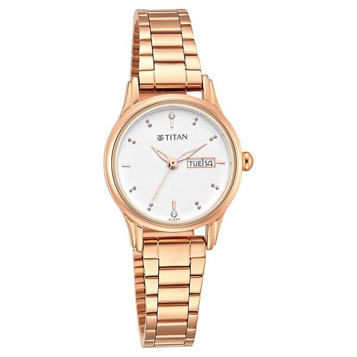
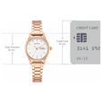
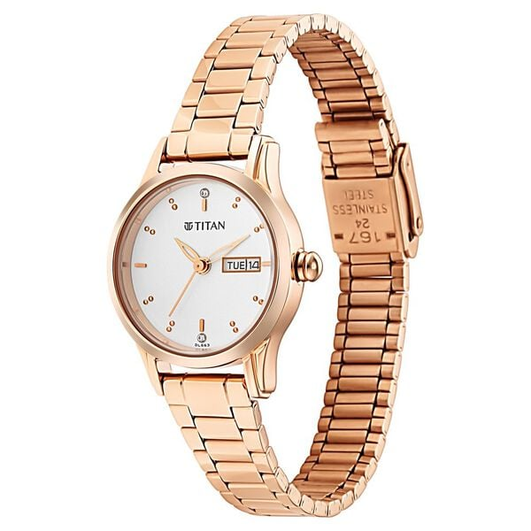
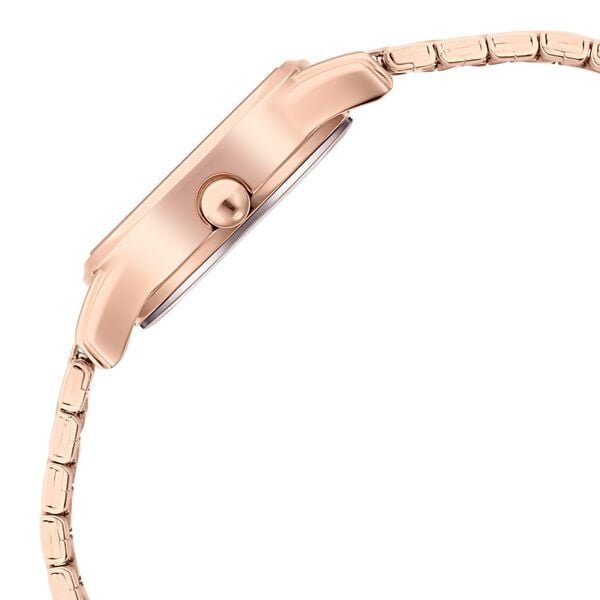

<!-- Sample PDP Block Structure -->
<!-- Copy this structure into your document when using the PDP block -->

<div class="pdp">
  <div class="pdp-container">
    <div class="product-wrapper">
      <!-- Product Images Section -->
      <div class="pdp-images">
        <div class="pdp-image-gallery">
          <div class="pdp-thumbnail active">
            
          </div>
          <div class="pdp-thumbnail">
            
          </div>
          <div class="pdp-thumbnail">
            
          </div>
          <div class="pdp-thumbnail">
            
          </div>
          <div class="pdp-thumbnail">
            
          </div>
          <div class="pdp-thumbnail">
            
          </div>
        </div>
        <div class="pdp-main-image">
          
        </div>
      </div>

      <!-- Product Details Section -->
      <div class="product-detail">
        <div class="pdp-brand">Titan</div>
        <h1 class="pdp-title">Titan Lagan Quartz Analog with Day and Date Women Watch - Silver Dial with Rose Gold Colour Metal Strap</h1>
        <div class="pdp-sku">SKU: 2656WM01</div>
        
        <div class="pdp-rating">
          <span class="pdp-stars">★★★★☆</span>
          <span class="pdp-rating-count">(248 reviews)</span>
        </div>

        <div class="pdp-price">
          <span class="pdp-current-price">₹8,995</span>
          <span class="pdp-original-price">₹12,995</span>
          <span class="pdp-discount">31% OFF</span>
        </div>

        <div class="pdp-description">
          <p>Elevate your style with this elegant Titan Lagan watch featuring a sophisticated quartz analog movement with day and date display. The silver dial perfectly complements the rose gold metal strap, creating a timeless piece for any occasion.</p>
        </div>

        <!-- Product Options -->
        <div class="pdp-options">
          <div class="pdp-option">
            <label class="pdp-option-label">Dial Color</label>
            <div class="pdp-option-values">
              <div class="pdp-option-value selected">Silver</div>
              <div class="pdp-option-value">White</div>
              <div class="pdp-option-value">Blue</div>
            </div>
          </div>

          <div class="pdp-option">
            <label class="pdp-option-label">Strap Color</label>
            <div class="pdp-option-values">
              <div class="pdp-option-value selected">Rose Gold</div>
              <div class="pdp-option-value">Silver</div>
              <div class="pdp-option-value">Gold</div>
            </div>
          </div>
        </div>

        <!-- Quantity Selector -->
        <div class="pdp-quantity">
          <span class="pdp-quantity-label">Quantity</span>
          <div class="pdp-quantity-selector">
            <button class="quantity-decrease" aria-label="Decrease quantity">−</button>
            <input type="number" class="quantity-input" value="1" min="1" readonly>
            <button class="quantity-increase" aria-label="Increase quantity">+</button>
          </div>
        </div>

        <!-- Action Buttons -->
        <div class="pdp-actions">
          <button class="pdp-add-to-cart">Add to Cart</button>
          <button class="pdp-buy-now">Buy Now</button>
        </div>

        <!-- Product Features -->
        <div class="pdp-features">
          <h3 class="pdp-features-title">Key Features</h3>
          <ul class="pdp-features-list">
            <li>Quartz analog movement with day and date display</li>
            <li>Premium metal strap with rose gold finish</li>
            <li>Silver dial with elegant design</li>
            <li>Water resistant up to 30 meters</li>
            <li>2 years manufacturer warranty</li>
            <li>Perfect for formal and casual wear</li>
          </ul>
        </div>

        <!-- Product Specifications -->
        <div class="pdp-specifications">
          <h3 class="pdp-specifications-title">Specifications</h3>
          <div class="pdp-spec-row">
            <div class="pdp-spec-label">Case Material:</div>
            <div class="pdp-spec-value">Brass</div>
          </div>
          <div class="pdp-spec-row">
            <div class="pdp-spec-label">Strap Material:</div>
            <div class="pdp-spec-value">Metal</div>
          </div>
          <div class="pdp-spec-row">
            <div class="pdp-spec-label">Dial Color:</div>
            <div class="pdp-spec-value">Silver</div>
          </div>
          <div class="pdp-spec-row">
            <div class="pdp-spec-label">Case Diameter:</div>
            <div class="pdp-spec-value">32mm</div>
          </div>
          <div class="pdp-spec-row">
            <div class="pdp-spec-label">Movement Type:</div>
            <div class="pdp-spec-value">Quartz</div>
          </div>
          <div class="pdp-spec-row">
            <div class="pdp-spec-label">Water Resistance:</div>
            <div class="pdp-spec-value">30 meters</div>
          </div>
          <div class="pdp-spec-row">
            <div class="pdp-spec-label">Warranty:</div>
            <div class="pdp-spec-value">2 Years Manufacturer Warranty</div>
          </div>
        </div>
      </div>
    </div>
  </div>
</div>

